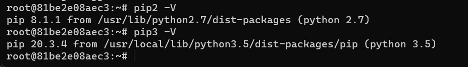
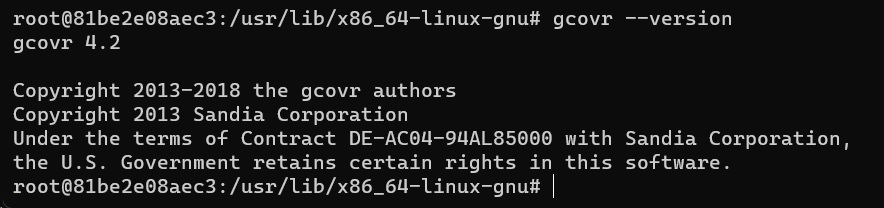
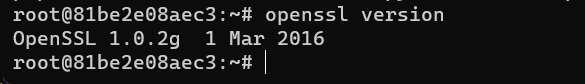
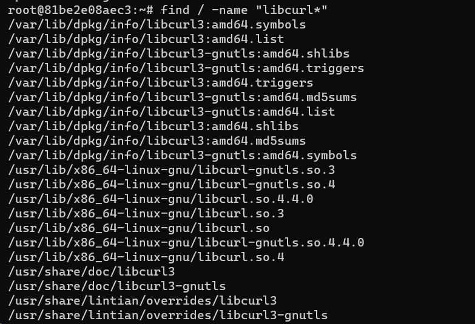
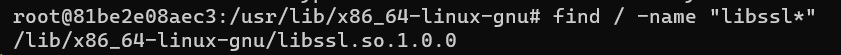
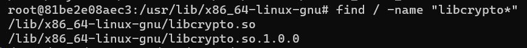

一、安装 Docker Desktop
二、下载并运行 Ubuntu 镜像
创建容器并运行（Ubuntu 版本 16.04），如果本地没有相应版本的镜像，则会自动下载
docker run -it --name ubuntu16.04_sonar -v /D/Work/sonar:/data ubuntu:16.04
运行已安装的容器
docker start -i ubuntu16.04_sonar
三、配置 Ubuntu 环境
apt update && apt upgrade
apt-get install build-essential
apt install software-properties-common
apt install vim
指定编码：C.UTF-8
locale
locale -a
cd ~ && vim .bashrc
export LANG=C.UTF-8
source .bashrc
安装 python 2.7 pip2
python -V
apt install python (python2)
apt install python-pip
安装 python3
python3 -V
apt install python3 (python3 的版本为 python 3.5)
安装 pip3
apt install python3-pip（默认版本太老了，不用安装）
通过相应版本的 get-pip.py 脚本安装
curl -fsSL -o- https://bootstrap.pypa.io/pip/3.5/get-pip.py | python3.5
或者
wget https://bootstrap.pypa.io/pip/3.5/get-pip.py
curl https://bootstrap.pypa.io/pip/3.5/get-pip.py -o get-pip.py
python3 get-pip.py (pip version pip 20.3.4)

pip3 install pip_search
安装 gcovr（注意，通过 apt 安装的版本太老了，通过 pip3 安装 4.2 版本的）
pip3 install -U gcovr

安装 OpenSSL
apt install openssl

find / -name "libcurl*"

Ubuntu 16.04 安装 OpenSSL 后，libssl.so 和 libcrypto.so 在 /lib/x86_64-linux-gnu 目录下
find / -name "libssl*"

find / -name "libcrypto*"

参考：